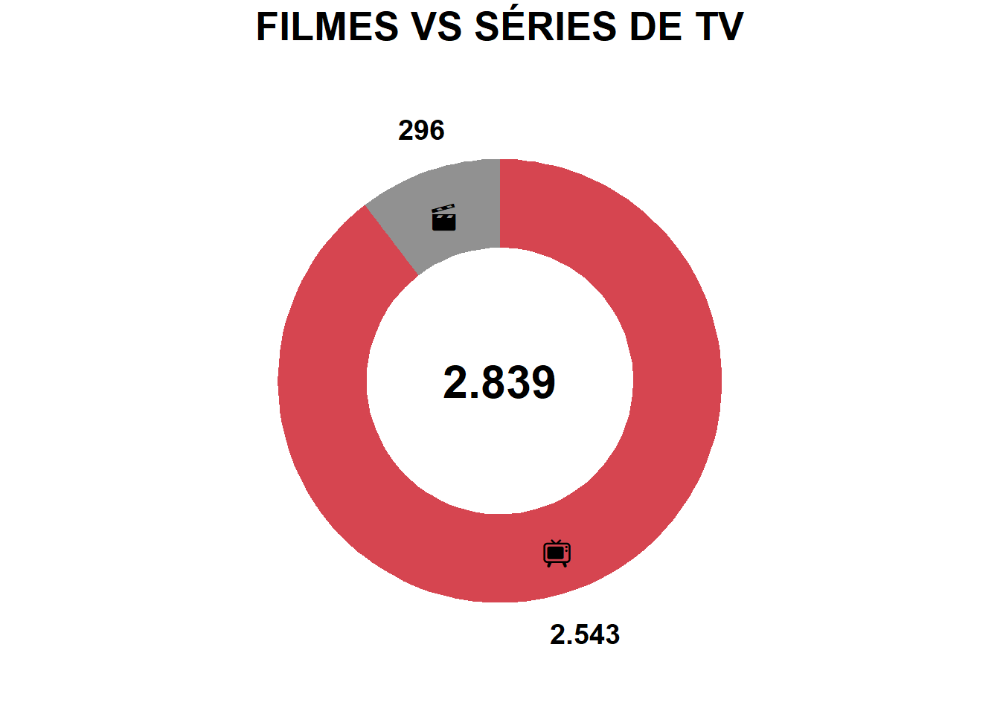
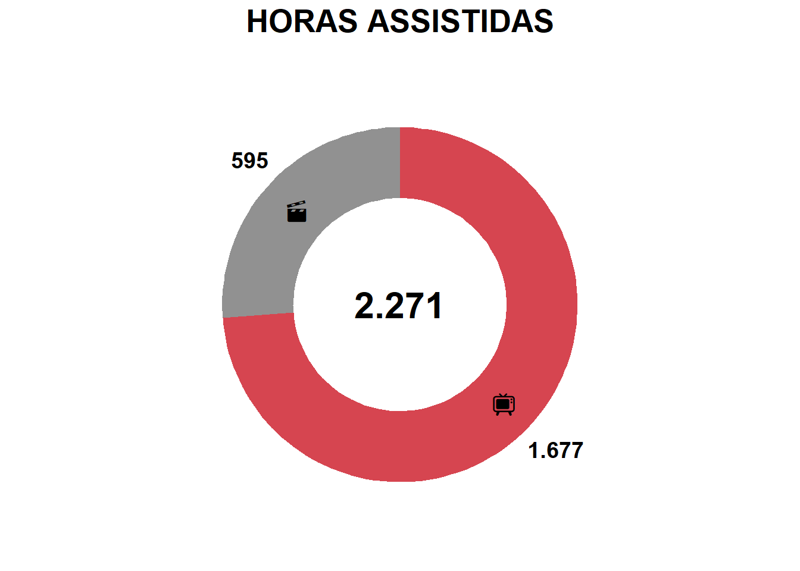
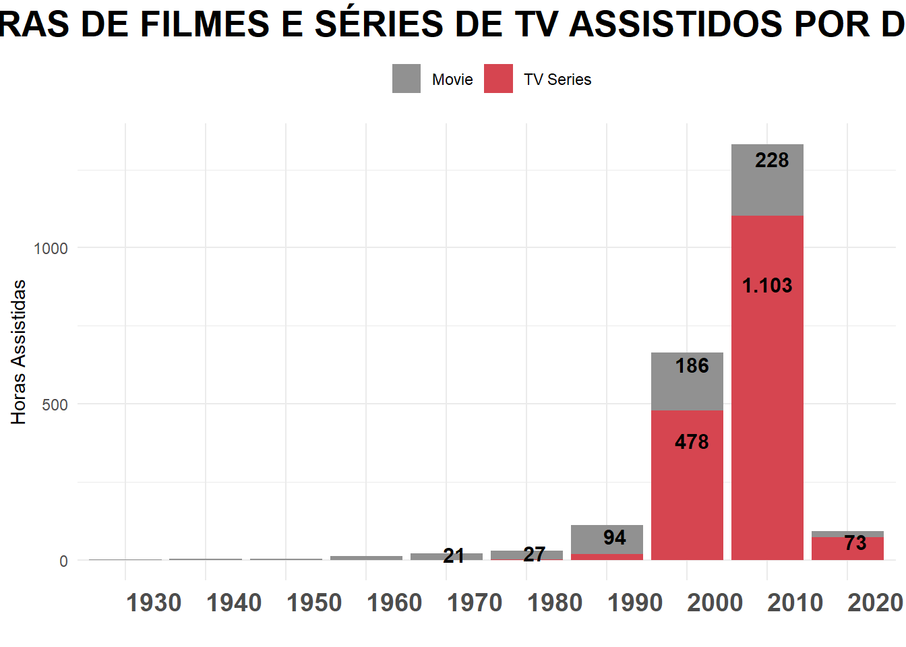
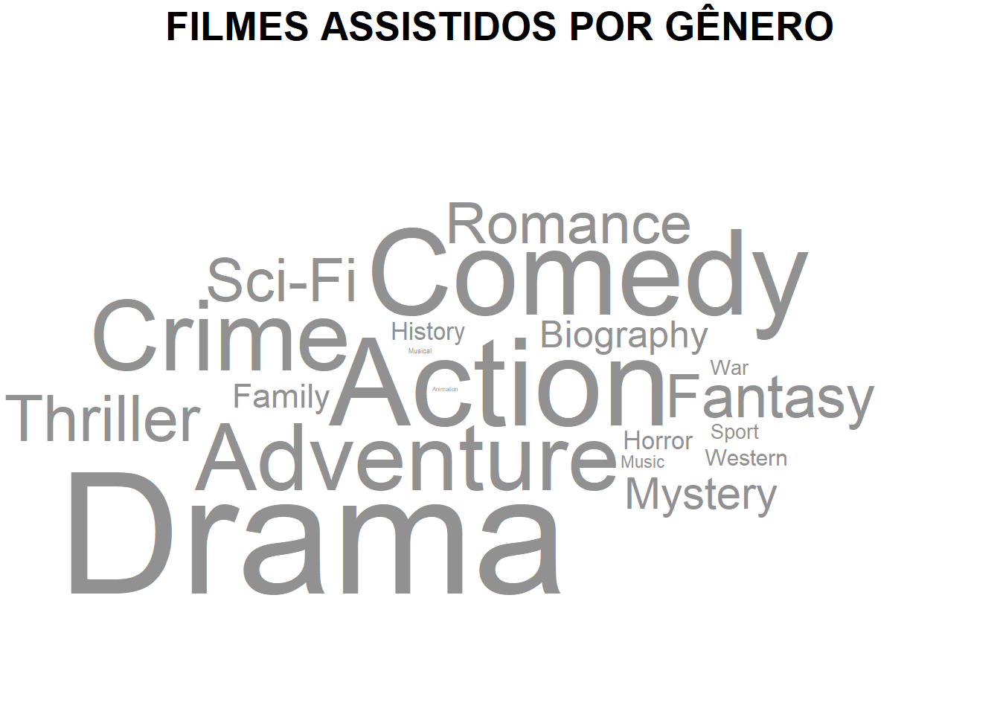
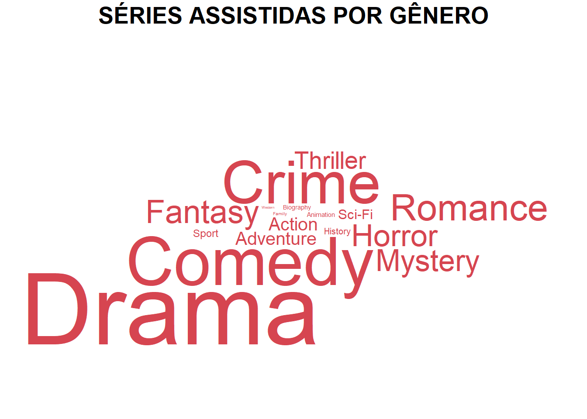
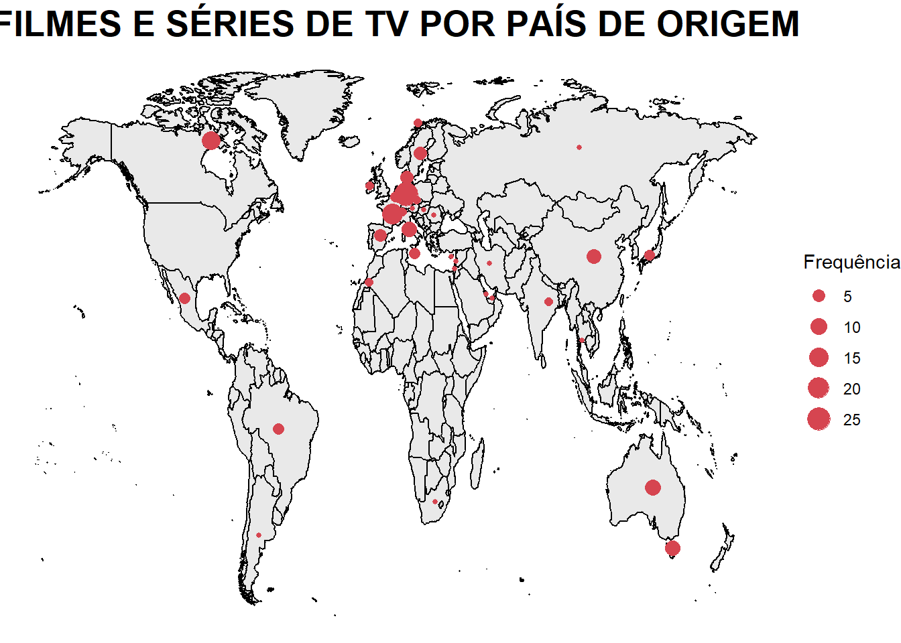
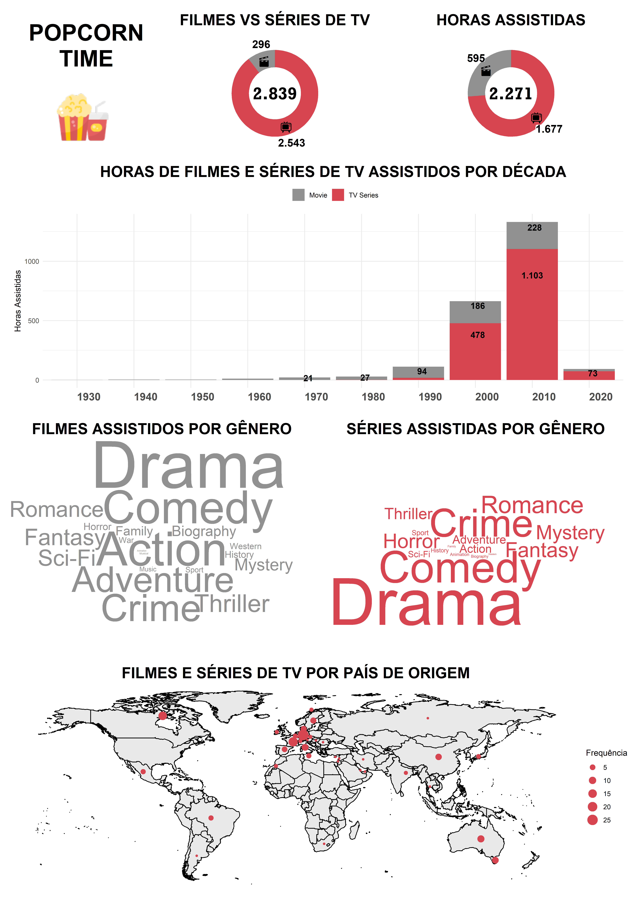

Popcorn Time
Raymundo Eduardo Pilz
2023-10-19
O presente trabalho foi desenvolvido na matéria do 2º período (2023) da disciplina de CE303 – Visualização de Dados Aplicada, ministrada pelo professor Anderson Ara pela Universidade Federal do Paraná (UFPR).
Incialmente, foi elaborado um relatório com o uso do PowerBI, disponível em:
LAYOUT EM GGPLOT
Carregando Bibliotecas
Carregando datasets
Code
Classes 'data.table' and 'data.frame': 2847 obs. of 7 variables:
$ tconst : chr "tt0076759" "tt0079470" "tt0111161" "tt1375666" ...
$ titleType : chr "movie" "movie" "movie" "movie" ...
$ primaryTitle : chr "Star Wars: Episode IV - A New Hope" "Life of Brian" "The Shawshank Redemption" "Inception" ...
$ originalTitle: chr "Star Wars" "Life of Brian" "The Shawshank Redemption" "Inception" ...
$ startYear : num 1977 1979 1994 2010 1983 ...
$ endYear : num NA NA NA NA NA NA NA NA NA NA ...
$ genres : chr "Action,Adventure,Fantasy" "Comedy" "Drama" "Action,Adventure,Sci-Fi" ...
- attr(*, ".internal.selfref")=<externalptr> Code
str(d_tempo)Classes 'data.table' and 'data.frame': 2897 obs. of 2 variables:
$ tconst : chr "tt0076759" "tt0079470" "tt0111161" "tt1375666" ...
$ runtimeMinutes: int 121 94 142 148 131 124 201 118 99 139 ...
- attr(*, ".internal.selfref")=<externalptr> Criando arquivos para puxar os dados referente aos países dos filmes utilizando webscrap
Code
# Importando arquivo base
d_paises <- fread("./dados/dCountry.csv")
# Criando nova tabela
dcountry <- select(d_paises, tconst)
dcountry$url <- paste0("https://www.imdb.com/title/", dcountry$tconst, "/")
# Definindo o tempo limite global (conexão e tamanho do dataset podem interromper o carregamento dos dados)
options(timeout = 120)
# Criando a função
extractCountry <- function(url) {
page <- read_html(url)
countries <- page %>%
html_nodes(".ipc-metadata-list__item[data-testid='title-details-origin'] .ipc-inline-list__item a.ipc-metadata-list-item__list-content-item--link") %>%
html_text() %>%
paste(collapse = ",")
return(countries)
}
# Invocando a função e carregando os dados
dcountry <- dcountry %>%
rowwise() %>%
mutate(country = extractCountry(url))
# Separando os páises
dcountry <- dcountry %>%
mutate(country = strsplit(country, ",")) %>%
unnest(country)
# Agrupando as funções
dcountry <- dcountry %>%
group_by(country) %>%
summarise(freq = n())
# Gerando os códigos ISO dos países
dcountry$iso3 <- countrycode(sourcevar = dcountry$country,
origin = "country.name",
destination = "iso3c")
str(dcountry)tibble [39 × 3] (S3: tbl_df/tbl/data.frame)
$ country: chr [1:39] "Argentina" "Australia" "Austria" "Belgium" ...
$ freq : int [1:39] 1 9 1 3 4 15 7 1 2 6 ...
$ iso3 : chr [1:39] "ARG" "AUS" "AUT" "BEL" ...Tratamento e Limpeza de dados
Para otimização do trabalho será criado uma tabela principal com todas as variaveis necessarias para a criação dos gráficos.
- Pontos a serem observados:
- Será criado uma nova coluna para a classificação em “Filme” ou “Episódio de Série de TV” a partir da coluna “titleType” da (d_titulos). Foram constatados que alguns variáveis de “titleType” podem ter sido favoritadas incorretamente quando salvas no site. Para não interfir na apuração dos dados, as mesmas serão eliminadas.
- Vamos trabalhar com o tempo em horas, assim, é necessários transformar minutos em horas.
Code
# Criando nova tabela a partir de d_titulos e realizando a classificação
fdata <- d_titulos %>%
select(tconst, titleType, startYear, genres) %>%
mutate(Type = case_when(
titleType %in% c("movie", "tvMovie") ~ "Movie",
titleType == "tvEpisode" ~ "TV Series",
TRUE ~ "Others"
))
# Filtrando os resultados para excluir aqueles que são classificados como "Others"
fdata <- filter(fdata, Type != "Others")
# Unindo as tabelas d_data e d_tempo. tconst como chave primaria
fdata <- left_join(fdata, d_tempo, by = "tconst")
# Criar coluna horas e eliminar colunas desnecessarias
fdata <- fdata %>%
mutate(Hours = runtimeMinutes / 60) %>%
select(-titleType, -runtimeMinutes)
fdata tconst startYear genres Type Hours
1: tt0076759 1977 Action,Adventure,Fantasy Movie 2.0166667
2: tt0079470 1979 Comedy Movie 1.5666667
3: tt0111161 1994 Drama Movie 2.3666667
4: tt1375666 2010 Action,Adventure,Sci-Fi Movie 2.4666667
5: tt0086190 1983 Action,Adventure,Fantasy Movie 2.1833333
---
2835: tt6263006 2017 Crime,Drama,Mystery TV Series 0.8500000
2836: tt6263008 2017 Crime,Drama,Mystery TV Series 0.8166667
2837: tt6263014 2017 Crime,Drama,Mystery TV Series 0.7333333
2838: tt6263012 2017 Crime,Drama,Mystery TV Series 0.8500000
2839: tt5780828 2017 Crime,Drama,Mystery TV Series 0.9500000Criando temas específicos
Code
# Temas padrão
cor_titulo <- "#000000"
fonte_titulo <- "Rockwell"
tamanho_titulo <- 30
# Cores Type
cor_series <- "#D64550"
cor_filmes <- "#919191"
dcolor <- data.frame(
Type = c("Movie", "TV Series"),
Color = c(cor_filmes, cor_series))
# Função para criar rótulos com imagens
imagem <- function(tipo) {
if (tipo == "Movie") {
return("🎬")
} else if (tipo == "TV Series") {
return("📺")
} else {
return(tipo)
}
}
# Definindo tema
meutema <- function(){
theme_void() +
theme(
# axis.title = element_text(size = 20,
# family = "Rockwell",
# colour = cor_titulos),
# axis.text = element_text(size = 20,
# family = "Rockwell",
# colour = cor_titulos),
plot.title = element_text(size = 30,
family = "Rockwell",
colour = cor_titulo,
face = "bold",
hjust=0.5)#,
# plot.background = element_rect(fill = NA,
# colour = NA),
# panel.background = element_rect(fill = NA,
# colour = NA),
# axis.ticks = element_line(colour = cor_titulos,
# size = 10),
# strip.background = element_rect(fill = cor_titulos),
# strip.text=element_text(family = "Rockwell",
# size = 15)
)
}Graficos
GRAFICO 1 - FILMES VS SÉRIES DE TV
Code
# Calcular a contagem para cada tipo (Type) em fdata
g1_data <- table(fdata$Type)
# Total de assistidos
total_assistido <- sum(g1_data)
# Criar o dataframe e incluir as cores
g1_data <- data.frame(Type = names(g1_data),
Qtde = as.numeric(g1_data))
g1_data$Freq <- (g1_data$Qtde / total_assistido)
# Mesclar com o dataframe de cores (dcolor)
g1_data <- left_join(g1_data, dcolor, by = "Type")
g1_data <- g1_data %>%
arrange(desc(Type))
# Criar o gráfico
g1 <- ggplot(
g1_data,
aes(x = 1,
y = Freq,
fill = Color)) +
geom_bar(width = 1,
stat = "identity") +
coord_polar("y",
start = 0) +
xlim(c(-1, 2)) +
theme_void() +
theme(plot.title = element_text(hjust = 0.5,
size = 20,
face = "bold")) +
geom_text(aes(label = paste(sapply(Type,
imagem))),
position = position_stack(vjust = 0.5),
size = 6) +
geom_label(aes(x = 2.0,
label = format(Qtde,
big.mark = ".")),
position = position_stack(vjust = 0.5),
size = 5,
fill = "white",
label.padding = unit(0.0, "lines"),
label.size = 0.0,
na.rm = FALSE,
fontface = "bold") +
ggtitle("FILMES VS SÉRIES DE TV") +
scale_fill_identity() +
theme(plot.title = element_text(size = 20,
face = "bold")) +
annotate("text",
label = format(total_assistido,
big.mark = "."),
family = fonte_titulo,
fontface = "bold",
color = cor_titulo,
size = 8,
x = -1,
y = 0)
# Exibir o gráfico
print(g1)
GRAFICO 2 - HORAS ASSISTIDAS
Code
[1] 2271Code
# Criar o dataframe e incluir as cores
g2_data$Freq <- (g2_data$Hours / horas_assistidas)
# Mesclar com o dataframe de cores (dcolor)
g2_data <- left_join(g2_data, dcolor, by = "Type")
g2_data <- g2_data %>%
arrange(desc(Type))
# Criar o gráfico
g2 <- ggplot(
g2_data,
aes(x = 1,
y = Freq,
fill = Color)) +
geom_bar(width = 1,
stat = "identity") +
coord_polar("y",
start = 0) +
xlim(c(-1, 2)) +
theme_void() +
theme(plot.title = element_text(hjust = 0.5,
size = 20,
face = "bold")) +
geom_text(aes(label = paste(sapply(Type,
imagem))),
position = position_stack(vjust = 0.5),
size = 6) +
geom_label(aes(x = 2.0,
label = format(round(Hours),
big.mark = ".")),
position = position_stack(vjust = 0.5),
size = 5,
fill = "white",
label.padding = unit(0.0, "lines"),
label.size = 0.0,
na.rm = FALSE,
fontface = "bold") +
ggtitle("HORAS ASSISTIDAS") +
scale_fill_identity() +
annotate("text",
label = format(horas_assistidas,
big.mark = "."),
family = fonte_titulo,
fontface = "bold",
color = cor_titulo,
size = 8,
x = -1,
y = 0)
# Exibir o gráfico
print(g2)
GRAFICO 3 - HORAS DE FILMES E SÉRIES DE TV ASSISTIDOS POR DÉCADA
Code
# Criando dataset
g3_data <- select(fdata, startYear, Type, Hours) %>%
filter(!is.na(Hours))
g3_data$Year <- as.character(floor(g3_data$startYear / 10) * 10)
g3_data <- g3_data %>%
filter(!is.na(Year)) %>% # Remover entradas com NA em Hours
group_by(Year, Type) %>%
summarise(Hours = sum(Hours))
# Mesclar com o dataframe de cores (dcolor)
g3_data <- left_join(g3_data, dcolor, by = "Type")
# g3_data <- g3_data %>%
# arrange(desc(Type))
# Criar o gráfico
g3 <- ggplot(
g3_data,
aes(fill = Type,
y = Hours,
x = Year,
label = format(round(Hours), big.mark = "."))) +
geom_bar(position = "stack",
stat = "identity") +
geom_text(data = subset(g3_data, Hours > 20),
position = position_stack(vjust = 0.8, reverse = FALSE),
size = 4,
color = "black",
fontface = "bold",
show.legend = FALSE) +
ggtitle("HORAS DE FILMES E SÉRIES DE TV ASSISTIDOS POR DÉCADA") +
xlab("") +
ylab("Horas Assistidas") +
scale_fill_manual(values = c(cor_filmes, cor_series)) +
theme_minimal() +
theme(plot.title = element_text(hjust = 0.5,
size = 20,
face = "bold"),
axis.text.x = element_text(size = 14,
face = "bold",
vjust = 0.5,
hjust = 0),
axis.text.y = element_text(),
legend.position = "top",
legend.justification = "center",
legend.title = element_blank(),
legend.box = "horizontal")
# Exibir o gráfico
print(g3)
GRAFICO 4 - FILMES ASSISTIDOS POR GÊNERO
Code
# Criando dataset
g4_data <- fdata %>%
mutate(genres = strsplit(genres, ",")) %>%
unnest(genres) %>%
select(tconst, Type, genres)
g4_data <- subset(g4_data, Type == "Movie")
g4_data <- g4_data %>%
group_by(genres) %>%
summarise(freq = n())
g4 <- g4_data %>%
ggplot() +
geom_text_wordcloud_area(aes(label = genres, size = freq), color = cor_filmes) +
theme_void() +
scale_size_continuous(range = c(1, 30)) + # Adjust the size range according to your preference
ggtitle("FILMES ASSISTIDOS POR GÊNERO") +
theme(
plot.title = element_text(hjust = 0.5, size = 20, face = "bold")
)
# Exibir o gráfico
print(g4)
GRAFICO 5 - SÉRIES ASSISTIDAS POR GÊNERO
Code
# Criando dataset
g5_data <- fdata %>%
mutate(genres = strsplit(genres, ",")) %>%
unnest(genres) %>%
select(tconst, Type, genres)
g5_data <- subset(g5_data, Type == "TV Series")
g5_data <- g5_data %>%
group_by(genres) %>%
summarise(freq = n())
g5 <- g5_data %>%
ggplot() +
geom_text_wordcloud_area(aes(label = genres, size = freq), color = cor_series) +
theme_void() +
scale_size_continuous(range = c(1, 30)) + # Adjust the size range according to your preference
ggtitle("SÉRIES ASSISTIDAS POR GÊNERO") +
theme(
plot.title = element_text(hjust = 0.5, size = 20, face = "bold")
)
# Exibir o gráfico
print(g5)
GRAFICO 6 - FILMES E SÉRIES DE TV POR PAÍS DE ORIGEM
Code
g6_data <- dcountry
WorldMap <- map_data("world") %>%
filter(region != "Antarctica") %>%
fortify()
WorldData <- left_join(WorldMap, g6_data, by = c("region" = "country"))
g6 <- ggplot(WorldData, aes(x = long, y = lat, group = group)) +
geom_polygon(color = "black", fill = cor_filmes, alpha = 0.2) +
stat_centroid(data = subset(WorldData, !is.na(freq)),
aes(size = freq, group = region),
geom = "point",
alpha = 1, color = cor_series) +
theme_void() +
ggtitle("FILMES E SÉRIES DE TV POR PAÍS DE ORIGEM") +
theme(
plot.title = element_text(hjust = 0.5, size = 20, face = "bold")
)+
labs(
size = "Frequência"
)
# Exibir o gráfico
g6
Criando layout de painel final
Code
#IMPORTANDO IMAGENS
imag1 <- readPNG("./imagens/PaginaA4.png")
im1<- rasterGrob(imag1, width = unit(29.7,"cm"), height = unit(42.0,"cm"))
imag2 <- readPNG("./imagens/Pipoca.png")
im2 <- rasterGrob(imag2, width = unit(2.40,"cm"), height = unit(2.40,"cm"))
#CRIANDO IMAGEM
png("Desafio3.png", width = 29.7 , height = 42.0, units = "cm", res = 500)
#CONSTRUIR UM NOVO GRID
grid.newpage()
# Defina o número de linhas e colunas
num_linhas <- 275
num_colunas <- 190
# Crie um novo layout de grid com o número especificado de linhas e colunas
layout <- grid.layout(num_linhas, num_colunas)
# Inicialize uma nova página de grid com o layout especificado
grid.newpage()
pushViewport(viewport(layout = layout))
# Adicione o texto "PIPOCA TIME" na linha 4, coluna 4
grid.text("POPCORN",
x = unit(40, "mm"),
y = unit(405, "mm"),
just = "center",
gp = gpar(fontsize = 20,
fontface = "bold",
col = "black",
cex = 1.5))
grid.text("TIME",
x = unit(40, "mm"),
y = unit(393, "mm"),
just = "center",
gp = gpar(fontsize = 20,
fontface = "bold",
col = "black",
cex = 1.5))
# Adicione os plots na área especificada
print(g1, vp = viewport(layout.pos.row = 4:48, layout.pos.col = 48:116))
print(g2, vp = viewport(layout.pos.row = 4:48, layout.pos.col = 118:186))
print(g3, vp = viewport(layout.pos.row = 50:126, layout.pos.col = 4:186))
print(g4, vp = viewport(layout.pos.row = 128:200, layout.pos.col = 4:93))
print(g5, vp = viewport(layout.pos.row = 128:200, layout.pos.col = 97:186))
print(g6, vp = viewport(layout.pos.row = 202:271, layout.pos.col = 4:186))
# Incluindo imagem
pushViewport(viewport(layout.pos.row = 24:48, layout.pos.col = 4:46))
print(grid.draw(im2))NULLCode
# Salve o gráfico final
dev.off()png
2 Resultado Final
